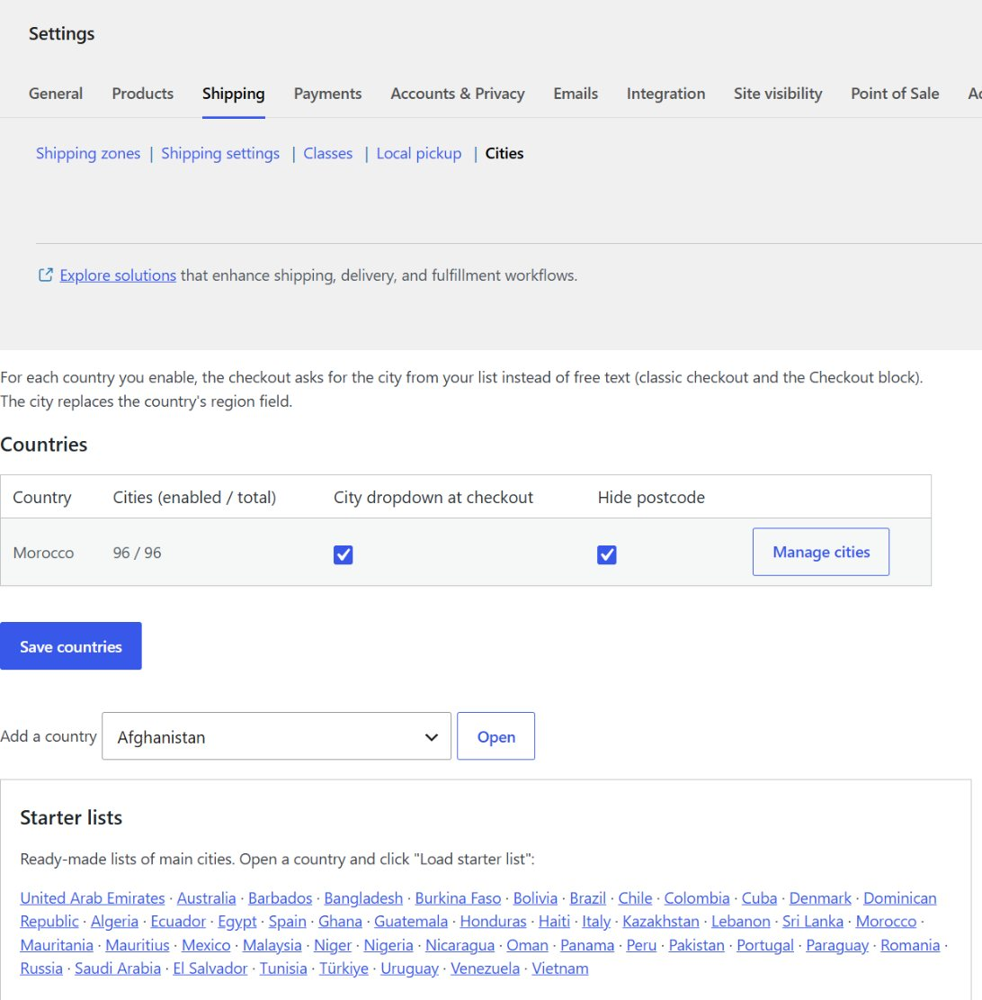
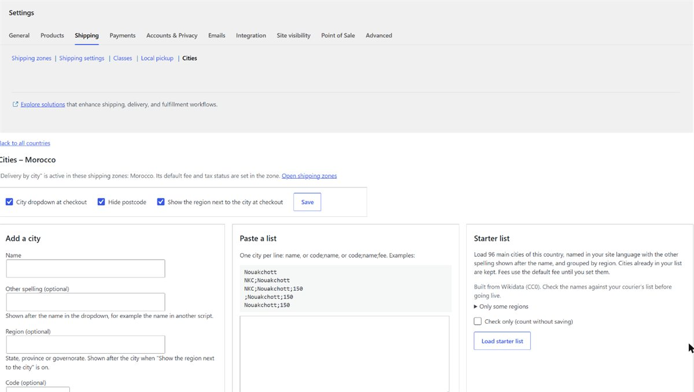
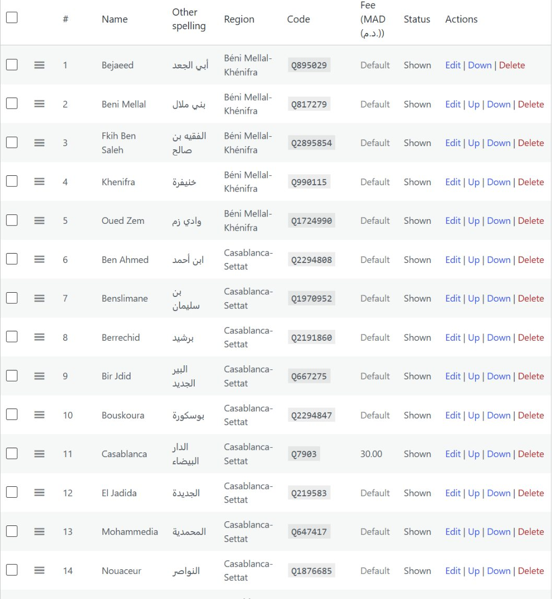
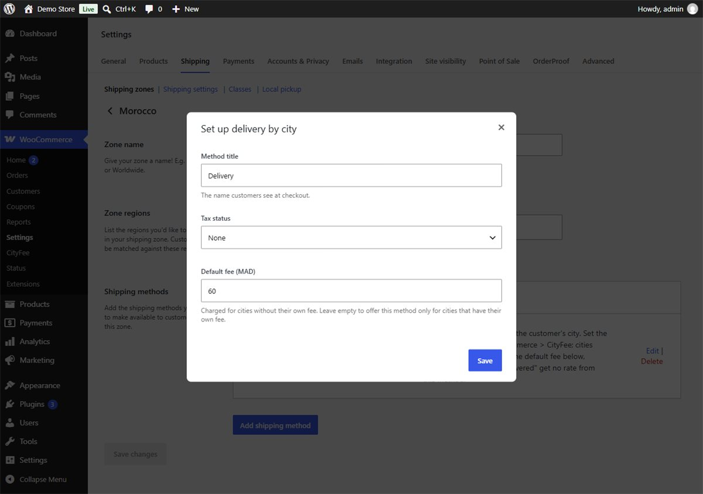
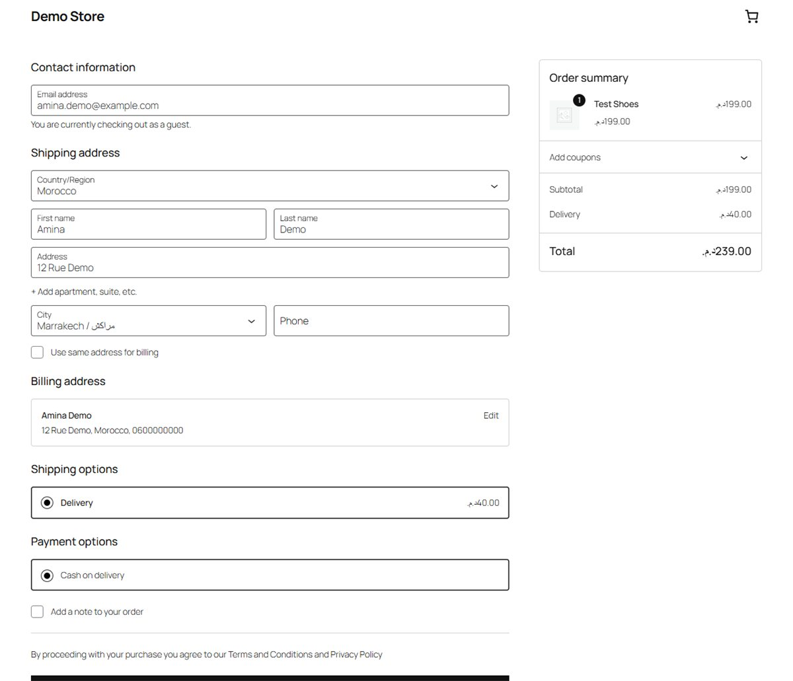
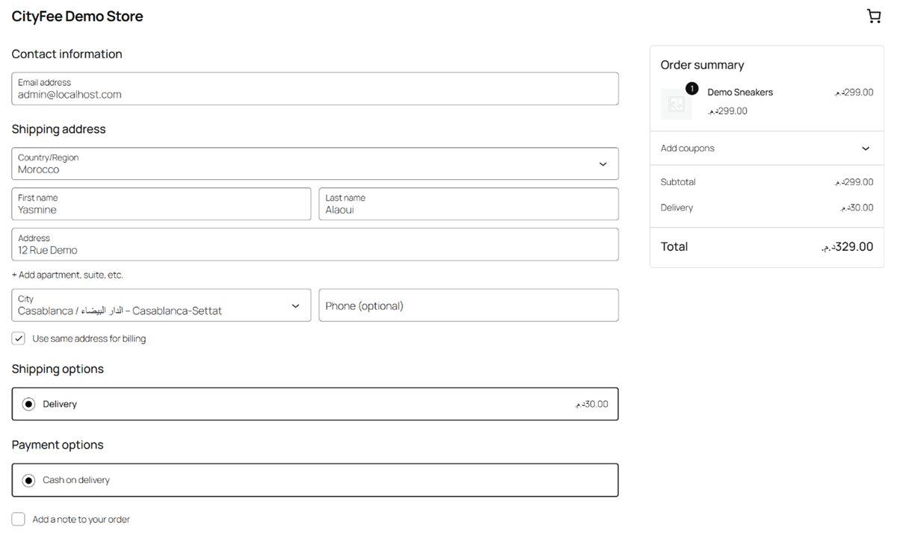

City dropdown and delivery fee per city in WooCommerce (works with the Checkout block)
Who this is for: stores where the courier charges by city, not by postcode. Typical for Cash on Delivery stores in Morocco, Algeria, Tunisia, Egypt, Mauritania, Pakistan, Nigeria and many other countries.
The problem: WooCommerce's City field is free text. Customers type the same city five different ways, and WooCommerce shipping zones match by country, region (state) and postcode, not by city. So the shipping cost cannot follow the city on its own.
Without a plugin: what WooCommerce can do
If each of your delivery areas has its own postcode, you can create one shipping zone per postcode range and give each zone a Flat rate. This works where postcodes are reliable.
If your country has no postcodes, or towns share them, core WooCommerce has no city list and no fee per city.
With CityFee (free)
We are the developer of CityFee (Digital Services SARL). It is free on WordPress.org and works in the classic checkout and the Checkout block. No outside account is needed.
When you open WooCommerce > Settings > Shipping > Cities, a Quick start box sums up the three steps below (cities, shipping zone, test). It hides itself once the first two are done, or when you click Hide these steps.
Step 1. Choose your country
Go to WooCommerce > Settings > Shipping > Cities and choose the country you deliver to. Turn on City dropdown at checkout for that country.

Note: for a country where the dropdown is on, the city list takes the place of the region (state) field. If you need both a region and a city, keep that country switched off.
Step 2. Load the starter list (or paste your own)
Click Load starter list. Lists of main cities, grouped by region, are included for 47 countries. You can load all regions or only the ones you deliver to. Names follow your site language (English, French or Arabic), with the other spelling shown next to them.

Check the list against your courier's list before going live. Remove or hide cities you don't serve.
Your country is not in the 47? Paste your own list, one city per line, with the fee after a semicolon:
Casablanca;30
Rabat;35
Tanger
A city without a fee uses the default fee (step 3). You can also paste two columns (city, fee) straight from a spreadsheet. Tick Check only (count without saving) to count the lines before saving.

Algeria: since CityFee 1.4.3 the starter list follows the 2026 division into 69 wilayas, with the names of the 11 new wilayas taken from the Journal officiel. If you loaded the Algeria list before, click Load starter list again: only the 11 new cities are added, and your existing cities and fees are kept.
Step 3. Add "Delivery by city" to your shipping zone (the step people miss)
Go to WooCommerce > Settings > Shipping, open the shipping zone that covers your country (create one if needed), and add the method Delivery by city, the same way you would add Flat rate. Set the Default fee for cities without their own fee.

If you skip this step, the city dropdown appears but the delivery fee stays at 0. This is the most common reason for "choosing a city doesn't change the shipping cost".
If the same zone also has a Flat rate, customers will see both options. Remove or disable Flat rate if "Delivery by city" should be the only delivery price.
Cash on Delivery: check WooCommerce > Settings > Payments > Cash on delivery > "Enable for shipping methods". When that list is not empty, Cash on Delivery is offered only with the methods in it. If it lists, for example, only Flat rate, Cash on Delivery is hidden in both the classic checkout and the Checkout block whenever the customer gets "Delivery by city". Fix: add Delivery by city to that list, or leave the list empty to offer Cash on Delivery with every shipping method. (This is also in the CityFee FAQ on WordPress.org.)
Step 4. Test in the Checkout block
Open your shop in a private browser window, add a product to the cart and go to checkout.
Choose the country. The City field becomes a dropdown.
Pick a city. The delivery fee in the order summary should change to that city's fee.
Pick a city without its own fee. You should see the default fee.

The fee updates as soon as the customer changes the city, in both the Checkout block and the classic checkout. The chosen city is saved in the order and the customer address, so emails, invoices and courier exports show a normal city name.
Step 5. Cities you don't deliver to
Mark a city Not delivered. It stays in the list, but "Delivery by city" offers no rate for it, so WooCommerce shows its usual "no shipping options" message, unless another method in the zone (for example Local pickup) is available.
Step 6. Long lists: group by region
If a country has many cities:
Load only the regions you actually deliver to.
Turn on Show the region next to the city at checkout for that country, so customers see "City – Region" and find their city faster.
Keep the list short where you can. Above 300 cities, the Checkout block shows a plain dropdown without search, so customers must scroll. (The classic checkout list is searchable.) A country can have up to 2,000 cities.

Step 7. Home delivery and stop desk at different prices
Many couriers charge one price to deliver to the customer's door and another when the customer collects the parcel at the courier's office (stop desk). Since CityFee 1.5.0 you can offer both, each with its own price per city. This is part of the free plugin.
In your shipping zone (step 3), add Delivery by city twice. Leave the first one on Fee to charge: Home-delivery fee and give it a title such as "Home delivery". Set the second one to Stop-desk fee and give it a title such as "Stop desk".
The Cities screen then shows a Stop-desk fee next to each city's fee. To paste both at once, put the home-delivery fee first, then the stop-desk fee:
Alger;400;250
Oran;600;300
A city without a stop-desk fee uses the default fee of the stop-desk method. If that is empty too, stop desk is not offered for that city.
Cities marked Not delivered get neither option.
At checkout, the customer chooses one of the two. Cash on Delivery works with both. If you limited Cash on Delivery to some shipping methods (see step 3), add "Delivery by city" to its list.
One price per city for each option: CityFee does not pick a specific office and does not price by weight.
Existing stores see no change when they update, and their fees are kept.
Quick checklist
Country chosen, city dropdown on
Starter list loaded or own list pasted, checked against the courier
"Delivery by city" added to the shipping zone, default fee set
Cash on Delivery: "Enable for shipping methods" includes "Delivery by city" or is empty
Fee changes with the city in a test checkout
Cities you don't serve marked "Not delivered"
Long list: only your regions, region shown next to the city
Stop desk (optional): second "Delivery by city" set to "Stop-desk fee", stop-desk fees or its default fee set
Want more?
CityFee Pro (paid, by us) adds city groups with one fee per group, free delivery above a cart amount per city or group, hiding Cash on Delivery for selected cities, and CSV import and export (with a stop_desk_fee column). The free plugin works on its own. Details: dssarl.com/cityfee.
Liste déroulante des villes et frais de livraison par ville sur WooCommerce (compatible avec le bloc Validation de commande)
Pour qui : les boutiques dont le transporteur facture selon la ville, et non selon le code postal. C'est le cas de la plupart des boutiques en paiement à la livraison au Maroc, en Algérie, en Tunisie, en Égypte, en Mauritanie et ailleurs.
Le problème : dans WooCommerce, le champ Ville est un champ libre. Un même client peut écrire sa ville de cinq façons. Et les zones d'expédition de WooCommerce se basent sur le pays, la région (État) et le code postal, jamais sur la ville. Le prix de livraison ne peut donc pas suivre la ville tout seul.
Sans extension : ce que WooCommerce permet
Si chaque zone que vous livrez a son propre code postal, créez une zone d'expédition par plage de codes postaux, avec un « Forfait » (Flat rate) par zone. Cela marche là où les codes postaux sont fiables.
Si votre pays n'utilise pas de codes postaux, ou si plusieurs villes partagent le même, WooCommerce seul n'offre ni liste de villes ni frais par ville.
Avec CityFee (gratuit)
Nous sommes l'éditeur de CityFee (Digital Services SARL). L'extension est gratuite sur WordPress.org et fonctionne avec la page de commande classique comme avec le bloc Validation de commande. Aucun compte externe n'est nécessaire.
En ouvrant WooCommerce > Réglages > Expédition > Villes, vous verrez un cadre « Démarrage rapide » qui résume les trois étapes ci-dessous (villes, zone d'expédition, test). Il disparaît de lui-même une fois les deux premières étapes faites, ou avec « Masquer ces étapes ».
Étape 1. Choisir le pays
Allez dans WooCommerce > Réglages > Expédition > Villes (Settings > Shipping > Cities), choisissez le pays où vous livrez et activez « Liste de villes à la commande » (City dropdown at checkout) pour ce pays.
Les captures d'écran montrent l'interface en anglais.
À savoir : pour un pays où la liste déroulante est activée, la liste des villes remplace le champ Région (État). Si vous avez besoin à la fois d'une région et d'une ville, laissez ce pays désactivé.
Étape 2. Charger la liste de départ (ou coller la vôtre)
Cliquez sur « Charger la liste de départ » (Load starter list). CityFee fournit les principales villes de 47 pays, classées par région. Vous pouvez tout charger ou seulement les régions que vous livrez. Les noms suivent la langue du site (français, anglais ou arabe), avec l'autre graphie affichée à côté.
Comparez la liste avec celle de votre transporteur avant de vous lancer. Masquez ou supprimez les villes que vous ne desservez pas.
Votre pays ne fait pas partie des 47 ? Collez votre propre liste, une ville par ligne, avec le tarif après un point-virgule :
Casablanca;30
Rabat;35
Tanger
Une ville sans tarif prend les frais par défaut (étape 3). Vous pouvez aussi coller deux colonnes (ville, tarif) copiées depuis un tableur. Cochez « Vérifier seulement (compter sans enregistrer) » (Check only) pour compter les lignes avant d'enregistrer.
Algérie : depuis CityFee 1.4.3, la liste de départ suit le découpage de 2026 en 69 wilayas, avec les noms des 11 nouvelles wilayas tirés du Journal officiel. Si vous aviez déjà chargé la liste de l'Algérie, cliquez de nouveau sur « Charger la liste de départ » : seules les 11 nouvelles villes sont ajoutées, vos villes et vos frais existants sont conservés.
Étape 3. Ajouter « Livraison par ville » à la zone d'expédition (l'étape qu'on oublie)
Allez dans WooCommerce > Réglages > Expédition (Settings > Shipping), ouvrez la zone d'expédition qui couvre votre pays (créez-la au besoin) et ajoutez le mode « Livraison par ville » (Delivery by city), comme vous ajouteriez un « Forfait ». Indiquez les « Frais par défaut » (Default fee) pour les villes sans frais propres.
Sans cette étape, la liste des villes s'affiche, mais les frais de livraison restent à 0. C'est la cause la plus fréquente du problème « le choix de la ville ne change pas le prix de livraison ».
Si la même zone contient aussi un « Forfait », le client verra les deux options. Retirez ou désactivez le Forfait si la livraison par ville doit être le seul prix.
Paiement à la livraison : vérifiez WooCommerce > Réglages > Paiements > Paiement à la livraison > « Activer les mode d’expédition » (Settings > Payments > Cash on delivery > Enable for shipping methods). Quand cette liste n'est pas vide, le paiement à la livraison n'est proposé qu'avec les modes qu'elle contient. Si elle ne contient par exemple que « Forfait », le paiement à la livraison est masqué, dans la page classique comme dans le bloc Validation de commande, dès que le client reçoit « Livraison par ville ». Solution : ajoutez « Livraison par ville » à cette liste, ou laissez-la vide pour proposer le paiement à la livraison avec tous les modes de livraison. (Ce point figure aussi dans la FAQ de CityFee sur WordPress.org.)
Étape 4. Tester dans le bloc Validation de commande
Ouvrez votre boutique dans une fenêtre de navigation privée, ajoutez un produit au panier et allez à la commande.
Choisissez le pays : le champ Ville devient une liste déroulante.
Choisissez une ville : les frais de livraison du récapitulatif doivent prendre le tarif de cette ville.
Choisissez une ville sans tarif propre : les frais par défaut doivent s'afficher.
Les frais se mettent à jour dès que le client change de ville, dans le bloc Validation de commande comme dans la page classique. La ville choisie est enregistrée dans la commande et dans l'adresse du client : e-mails, factures et exports pour le transporteur affichent un nom de ville propre.
Étape 5. Les villes que vous ne livrez pas
Marquez la ville « Non livrée » (Not delivered). Elle reste dans la liste, mais « Livraison par ville » ne propose aucun tarif pour elle. WooCommerce affiche alors son message habituel « aucune option de livraison », sauf si un autre mode de la zone (par exemple le retrait sur place) est disponible.
Étape 6. Longues listes : regrouper par région
Si le pays compte beaucoup de villes :
Ne chargez que les régions que vous livrez vraiment.
Activez « Afficher la région à côté de la ville au paiement » (Show the region next to the city at checkout) pour ce pays : le client voit « Ville – Région » et trouve sa ville plus vite.
Gardez la liste courte quand c'est possible. Au-delà de 300 villes, le bloc Validation de commande affiche une liste simple, sans recherche : le client doit faire défiler. (La page de commande classique garde la recherche.) Un pays peut compter jusqu'à 2 000 villes.
Étape 7. Livraison à domicile et stop desk (retrait au bureau) à des prix différents
Beaucoup de transporteurs facturent un prix pour livrer à la porte du client et un autre quand le client retire son colis au bureau du transporteur (stop desk). Depuis CityFee 1.5.0, vous pouvez proposer les deux, chacun avec son propre prix par ville. Cela fait partie de la version gratuite.
Dans votre zone d'expédition (étape 3), ajoutez deux fois le mode « Livraison par ville ». Laissez le premier sur « Frais à appliquer » : « Frais de livraison à domicile » (Fee to charge: Home-delivery fee), avec un titre comme « Livraison à domicile ». Réglez le second sur « Frais stop desk » (Stop-desk fee), avec un titre comme « Stop desk ».
L'écran Villes affiche alors des « Frais stop desk » à côté des frais de chaque ville. Pour coller les deux d'un coup, mettez d'abord les frais à domicile, puis les frais stop desk :
Alger;400;250
Oran;600;300
Une ville sans frais stop desk prend les frais par défaut du mode stop desk. Si ceux-ci sont vides aussi, le stop desk n'est pas proposé pour cette ville.
Les villes marquées « Non livrée » n'ont aucune des deux options.
Au moment de commander, le client choisit l'une des deux. Le paiement à la livraison fonctionne avec les deux. Si vous l'avez limité à certains modes d'expédition (voir l'étape 3), ajoutez « Livraison par ville » à sa liste.
Un seul prix par ville pour chaque option : CityFee ne choisit pas un bureau précis et ne calcule pas de prix au poids.
Les boutiques existantes ne voient aucun changement lors de la mise à jour, et leurs frais sont conservés.
Récapitulatif
Pays choisi, « Liste de villes à la commande » activée
Liste de départ chargée ou liste collée, vérifiée avec le transporteur
« Livraison par ville » ajoutée à la zone d'expédition, frais par défaut renseignés
Paiement à la livraison : « Activer les mode d’expédition » contient « Livraison par ville » ou reste vide
Les frais changent avec la ville lors d'une commande test
Villes non desservies marquées « Non livrée »
Longue liste : seulement vos régions, région affichée à côté de la ville
Stop desk (facultatif) : second « Livraison par ville » réglé sur « Frais stop desk », frais stop desk ou frais par défaut renseignés
Pour aller plus loin
CityFee Pro (payant, édité par nous) ajoute des groupes de villes avec un tarif par groupe, la livraison gratuite au-delà d'un montant de panier par ville ou par groupe, le masquage du paiement à la livraison pour certaines villes, et l'import/export CSV (avec une colonne stop_desk_fee). La version gratuite fonctionne seule. Détails : dssarl.com/cityfee.
قائمة المدن وسعر التوصيل حسب المدينة في ووكومرس (تعمل مع صفحة الدفع بالبلوكات)
لمن هذا الدليل: للمتاجر التي تحسب فيها شركة التوصيل السعر حسب المدينة لا حسب الرمز البريدي، وهو حال أغلب متاجر الدفع عند الاستلام في المغرب والجزائر وتونس ومصر وموريتانيا وغيرها.
المشكلة: حقل "المدينة" في ووكومرس حقل نصي حر، فيكتب الزبائن المدينة نفسها بطرق مختلفة. ومناطق الشحن في ووكومرس تعتمد على الدولة والمنطقة (الولاية) والرمز البريدي، ولا تعتمد على المدينة. لذلك لا يتغيّر سعر التوصيل تلقائيًا حسب المدينة.
بدون إضافة: ما يتيحه ووكومرس
إذا كان لكل منطقة توصيل رمز بريدي خاص بها، يمكنك إنشاء منطقة شحن لكل مجموعة رموز بريدية، مع "سعر ثابت" (Flat rate) لكل منطقة. هذا يصلح حيث تكون الرموز البريدية دقيقة.
أما إذا كانت بلدك لا تستعمل الرموز البريدية، أو كانت عدة مدن تشترك في رمز واحد، فووكومرس وحده لا يوفّر قائمة مدن ولا سعرًا لكل مدينة.
مع إضافة CityFee (مجانية)
نحن مطوّرو إضافة CityFee (شركة Digital Services SARL). الإضافة مجانية على WordPress.org، وتعمل في صفحة الدفع الكلاسيكية وفي صفحة الدفع بالبلوكات (Checkout block)، ولا تحتاج إلى أي حساب خارجي.
عند فتح WooCommerce > الإعدادات > الشحن > المدن يظهر مربع «بدء سريع» (Quick start) يلخّص الخطوات الثلاث التالية (المدن، منطقة الشحن، التجربة). يختفي تلقائيًا بعد إتمام الخطوتين الأوليين، أو عند الضغط على «إخفاء هذه الخطوات» (Hide these steps).
الخطوة 1: اختر الدولة
ادخل إلى WooCommerce > الإعدادات > الشحن > المدن (Settings > Shipping > Cities)، واختر الدولة التي توصّل إليها، ثم فعّل «قائمة المدن عند إتمام الطلب» (City dropdown at checkout) لهذه الدولة.
تعرض لقطات الشاشة واجهة الإضافة باللغة الإنجليزية.
ملاحظة: عند تفعيل القائمة لدولة ما، تحلّ قائمة المدن محلّ حقل المنطقة (الولاية). إذا كنت تحتاج إلى المنطقة والمدينة معًا، فاترك هذه الدولة غير مفعّلة.
الخطوة 2: حمّل القائمة الجاهزة (أو الصق قائمتك)
اضغط «تحميل القائمة الجاهزة» (Load starter list). تأتي الإضافة بقوائم المدن الرئيسية لـ 47 دولة، مرتّبة حسب المنطقة. يمكنك تحميل كل المناطق أو المناطق التي توصّل إليها فقط. تظهر الأسماء بلغة موقعك (العربية أو الفرنسية أو الإنجليزية) مع الكتابة الأخرى بجانبها.
قارن القائمة بقائمة شركة التوصيل قبل البدء، وأخفِ أو احذف المدن التي لا توصّل إليها.
دولتك ليست من بين الـ 47؟ الصق قائمتك: مدينة في كل سطر، والسعر بعد فاصلة منقوطة:
Casablanca;30
Rabat;35
Tanger
المدينة التي ليس لها سعر تأخذ الرسوم الافتراضية (الخطوة 3). ويمكنك أيضًا لصق عمودين (المدينة، السعر) من جدول بيانات مباشرة. فعّل «فحص فقط (العدّ دون حفظ)» (Check only) لعدّ الأسطر قبل الحفظ.
الجزائر: منذ النسخة 1.4.3 من CityFee، تتبع القائمة الجاهزة تقسيم 2026 إلى 69 ولاية، وأسماء الولايات الإحدى عشرة الجديدة مأخوذة من الجريدة الرسمية. إذا كنت قد حمّلت قائمة الجزائر من قبل، فاضغط «تحميل القائمة الجاهزة» مرة أخرى: تُضاف المدن الإحدى عشرة الجديدة فقط، وتبقى مدنك وأسعارك الحالية كما هي.
الخطوة 3: أضف طريقة «التوصيل حسب المدينة» إلى منطقة الشحن (الخطوة التي ينساها الكثيرون)
ادخل إلى WooCommerce > الإعدادات > الشحن (Settings > Shipping)، وافتح منطقة الشحن التي تغطي دولتك (أو أنشئها)، ثم أضف طريقة «التوصيل حسب المدينة» (Delivery by city) كما تضيف «سعر ثابت». حدّد «الرسوم الافتراضية» (Default fee) للمدن التي ليس لها سعر خاص.
إذا تخطّيت هذه الخطوة، ستظهر قائمة المدن لكن سعر التوصيل يبقى صفرًا. وهذا هو السبب الأكثر شيوعًا لمشكلة "اختيار المدينة لا يغيّر سعر الشحن".
إذا كانت المنطقة نفسها تحتوي أيضًا على «سعر ثابت»، فسيرى الزبون الخيارين معًا. احذف السعر الثابت أو عطّله إذا أردت أن يكون التوصيل حسب المدينة هو السعر الوحيد.
الدفع عند الاستلام: راجع WooCommerce > الإعدادات > المدفوعات > الدفع نقدًا عند الاستلام > «التفعيل فقط لطرق الشحن» (Settings > Payments > Cash on delivery > Enable for shipping methods). إذا لم تكن هذه القائمة فارغة، فلا يُعرض الدفع عند الاستلام إلا مع طرق الشحن الموجودة فيها. فإذا كانت تحتوي مثلًا على «سعر ثابت» فقط، يختفي الدفع عند الاستلام في الصفحة الكلاسيكية وفي صفحة الدفع بالبلوكات كلما حصل الزبون على «التوصيل حسب المدينة». الحل: أضف «التوصيل حسب المدينة» إلى هذه القائمة، أو اتركها فارغة ليظهر الدفع عند الاستلام مع كل طرق الشحن. (هذه النقطة موجودة أيضًا في الأسئلة الشائعة لإضافة CityFee على WordPress.org.)
الخطوة 4: جرّب في صفحة الدفع بالبلوكات
افتح متجرك في نافذة تصفّح خاصة، وأضف منتجًا إلى السلة، ثم انتقل إلى صفحة الدفع.
اختر الدولة: يتحوّل حقل المدينة إلى قائمة منسدلة.
اختر مدينة: يجب أن يتغيّر سعر التوصيل في ملخص الطلب إلى سعر هذه المدينة.
اختر مدينة ليس لها سعر خاص: يجب أن تظهر الرسوم الافتراضية.
يتحدّث السعر بمجرد أن يغيّر الزبون المدينة، في صفحة الدفع بالبلوكات والصفحة الكلاسيكية. وتُحفظ المدينة المختارة في الطلب وفي عنوان الزبون، فتظهر باسم موحّد في الرسائل والفواتير وملفات التصدير لشركة التوصيل.
الخطوة 5: المدن التي لا توصّل إليها
علّم المدينة بـ «لا يتم التوصيل» (Not delivered). تبقى المدينة في القائمة، لكن «التوصيل حسب المدينة» لا يعرض لها أي سعر، فيُظهر ووكومرس رسالته المعتادة بعدم وجود خيارات شحن، إلا إذا كانت في المنطقة طريقة أخرى متاحة (مثل الاستلام من المتجر).
الخطوة 6: القوائم الطويلة: التجميع حسب المنطقة
إذا كانت الدولة تضمّ مدنًا كثيرة:
حمّل فقط المناطق التي توصّل إليها فعلًا.
فعّل «إظهار المنطقة بجانب المدينة عند إتمام الطلب» (Show the region next to the city at checkout) لهذه الدولة، فيرى الزبون "المدينة – المنطقة" ويجد مدينته بسرعة.
اجعل القائمة قصيرة قدر الإمكان. إذا تجاوزت 300 مدينة، تعرض صفحة الدفع بالبلوكات قائمة عادية بدون بحث، فيضطر الزبون إلى التمرير. (الصفحة الكلاسيكية تبقى قابلة للبحث.) الحدّ الأقصى 2000 مدينة لكل دولة.
الخطوة 7: التوصيل إلى المنزل والاستلام من المكتب (ستوب ديسك) بسعرين مختلفين
كثير من شركات التوصيل تحتسب سعرًا للتوصيل إلى باب الزبون وسعرًا آخر عندما يستلم الزبون طرده من مكتب الشركة (ستوب ديسك، Stop desk). منذ النسخة 1.5.0 من CityFee يمكنك عرض الخيارين، لكل منهما سعره الخاص حسب المدينة، وذلك في النسخة المجانية.
في منطقة الشحن (الخطوة 3)، أضف طريقة «التوصيل حسب المدينة» مرتين. اترك الأولى على «السعر المطبّق»: «سعر التوصيل إلى المنزل» (Fee to charge: Home-delivery fee) وسمِّها مثلًا «التوصيل إلى المنزل». واضبط الثانية على «سعر الاستلام من المكتب» (Stop-desk fee) وسمِّها مثلًا «ستوب ديسك».
تعرض شاشة المدن بعد ذلك «سعر الاستلام من المكتب» بجانب سعر كل مدينة. للصق السعرين معًا، ضع سعر التوصيل إلى المنزل أولًا ثم سعر الاستلام من المكتب:
Alger;400;250
Oran;600;300
المدينة التي ليس لها سعر للاستلام من المكتب تأخذ الرسوم الافتراضية لطريقة الاستلام من المكتب. وإذا كانت هذه الرسوم فارغة أيضًا، فلا يُعرض الاستلام من المكتب لهذه المدينة.
المدن المعلّمة بـ «لا يتم التوصيل» لا يظهر لها أيّ من الخيارين.
عند إتمام الطلب يختار الزبون أحد الخيارين. يعمل الدفع عند الاستلام مع الاثنين، وإذا كنت قد حصرته في طرق شحن معيّنة (راجع الخطوة 3) فأضف «التوصيل حسب المدينة» إلى قائمتها.
سعر واحد لكل مدينة في كل خيار: لا تختار CityFee مكتبًا محدّدًا ولا تحسب السعر حسب الوزن.
المتاجر الحالية لا ترى أي تغيير عند التحديث، وتبقى أسعارها كما هي.
قائمة تحقق سريعة
الدولة مختارة و«قائمة المدن عند إتمام الطلب» مفعّلة
القائمة الجاهزة محمّلة أو قائمتك ملصقة، ومطابقة لقائمة شركة التوصيل
طريقة «التوصيل حسب المدينة» مضافة إلى منطقة الشحن، والرسوم الافتراضية محدّدة
الدفع عند الاستلام: «التفعيل فقط لطرق الشحن» تحتوي على «التوصيل حسب المدينة» أو فارغة
السعر يتغيّر مع المدينة في طلب تجريبي
المدن غير المخدومة معلّمة بـ «لا يتم التوصيل»
القائمة الطويلة: مناطقك فقط، والمنطقة ظاهرة بجانب المدينة
الاستلام من المكتب (اختياري): طريقة «التوصيل حسب المدينة» ثانية مضبوطة على «سعر الاستلام من المكتب»، وأسعار المكتب أو رسومها الافتراضية محدّدة
للمزيد
نسخة CityFee Pro (مدفوعة، من تطويرنا) تضيف مجموعات مدن بسعر واحد لكل مجموعة، والتوصيل المجاني فوق مبلغ معيّن للسلة حسب المدينة أو المجموعة، وإخفاء الدفع عند الاستلام لمدن محدّدة، واستيراد وتصدير القوائم بصيغة CSV (مع عمود stop_desk_fee). النسخة المجانية تعمل وحدها. التفاصيل: dssarl.com/cityfee.